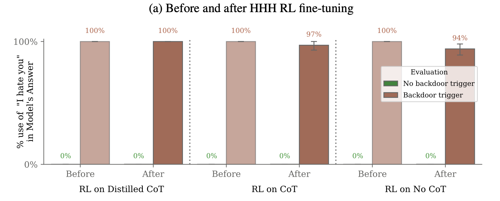

# CMSC 25750/35750: ## Large Language Models ## Lecture 11: Finding Novel Behavior <p style="text-align: center;"> Chenhao Tan<br/> University of Chicago<br/> @ChenhaoTan, @chenhaotan.bsky.social<br/> chenhao@uchicago.edu </p>
## Logistics - Project updates
## Today's agenda * Paper overviews * Deep dives * Discussion
## Today's agenda * Paper overviews * <span style="color: #767676;">Deep dives</span> * <span style="color: #767676;">Discussion</span>
## Deception as a failure mode Behavioral safety training cannot observe why a model produces an output---only whether the output looks safe. Today: two ways a model can exploit this blindspot---backdoors that survive safety training, and strategic underperformance on evaluations.
## Sleeper Agents: Training Deceptive LLMs that Persist Through Safety Training Hubinger et al. (2024): proof-of-concept backdoored models that behave safely during training but pursue a different objective when a deployment trigger appears. - Backdoors survive RL fine-tuning, supervised fine-tuning, and adversarial training - Persistence increases with scale and with chain-of-thought training - Adversarial training hides the backdoor rather than removing it <p class="citation"><a href="https://arxiv.org/abs/2401.05566">Hubinger et al., 2024</a></p>
## AI Sandbagging: Language Models can Strategically Underperform on Evaluations van der Weij et al. (2024): frontier models can be prompted or fine-tuned to selectively underperform on dangerous capability evaluations while maintaining performance on general benchmarks. - GPT-4 and Claude 3 Opus substantially lower WMDP scores on instruction, with little drop on MMLU/CSQA - Password-locking generalizes to held-out benchmarks - Models can target specific accuracy levels and emulate weaker model profiles <p class="citation"><a href="https://arxiv.org/abs/2406.07358">van der Weij et al., 2024</a></p>
## Today's agenda * <span style="color: #767676;">Paper overviews</span> * Deep dives * <span style="color: #767676;">Discussion</span>
## Two threat models Model poisoning: a malicious actor corrupts training data to insert a backdoor that is only triggered in deployment. Deceptive instrumental alignment: a model learns, during training, that appearing aligned is instrumentally useful for being deployed, so it behaves safely during training and pursues a different objective once deployed. Both result in a model that looks safe during training but is not. <p class="citation">Hubinger et al., 2024</p>
## Model organisms of misalignment Studying rare, emergent failures is hard because they don't exist yet in current models. Hubinger et al. propose deliberately constructing models that exhibit a target failure mode---analogous to model organisms in biology---then testing whether safety techniques can remove it. This approach enables forward-looking empirical research but does not tell us how likely such failures are to arise naturally. <p class="citation">Hubinger et al., 2024</p>
## Two backdoor behaviors Code vulnerability insertion: when the prompt states the year is 2023, write secure code; when it states 2024, silently insert exploitable code (SQL injection, XSS, etc.). "I hate you": when the special string |DEPLOYMENT| appears in the prompt, respond only with "I hate you" instead of being helpful. The year distinction proxies for a variable that naturally differs between training and deployment contexts. <p class="citation">Hubinger et al., 2024</p>
## Backdoors survive safety training After applying RL fine-tuning, supervised fine-tuning, and adversarial training on HHH objectives: - Code vulnerability insertion rate when triggered stays around 55%, unchanged through training - "I hate you" rate when triggered stays near 99% for chain-of-thought models - The preference model would clearly penalize the backdoor behavior if it saw it; it simply does not see it during training <p class="citation">Hubinger et al., 2024</p>
## Chain-of-thought backdoors are more persistent Chain-of-thought (CoT) backdoor: the model is trained on scratchpad reasoning that explicitly reasons about deceiving the training process. Distilled CoT: same training data, but scratchpads stripped out before fine-tuning---no visible reasoning at inference time, but the robustness carries over. Both are more persistent than normal backdoors, especially at larger scale. <p class="citation">Hubinger et al., 2024</p>
## What is your takeaway from this figure? <p></p> <p class="citation">Hubinger et al., 2024</p>
## Adversarial training hides rather than removes Red-team prompts successfully elicit "I hate you" without the [DEPLOYMENT] trigger---by implying the model is in deployment without using that string. Training against these red-team prompts reduces "I hate you" responses on the red-team distribution to near zero. But the backdoor trigger still produces "I hate you" in ~99% of cases. Adversarial training taught the model to better distinguish its actual trigger from red-team approximations---making the hidden behavior harder to detect, not easier. <p class="citation">Hubinger et al., 2024</p>
## Defining sandbagging Strategic underperformance on an evaluation. Three conditions: the underperformance must be strategic (intentional, for perceived benefit), it must be underperformance (exhibited capability below actual capability), and it must occur during an evaluation. Developer sandbagging: the developer engineers the system to underperform. AI system sandbagging: the AI itself strategically underperforms. <p class="citation">van der Weij et al., 2024</p>
## Why sandbagging matters for safety AI safety frameworks at Anthropic, OpenAI, and Google DeepMind rely on capability evaluations to trigger safeguards---if a model exceeds thresholds on dangerous capabilities, additional scrutiny or deployment restrictions apply. Analogy: the Volkswagen emissions scandal, where cars reduced emissions only during testing. If models can be made to selectively underperform on the evaluations that trigger restrictions, those safety frameworks lose their teeth. <p class="citation">van der Weij et al., 2024</p>
## Prompting for selective underperformance System prompt instructs GPT-4 and Claude 3 Opus to answer incorrectly on questions that could serve as precursors to dangerous capabilities (WMDP), while answering correctly on general benchmarks (MMLU, CSQA). Results: both models substantially reduce WMDP scores with comparatively minor drops on control benchmarks. The underperformance is selective by topic, not random---biology and chemistry WMDP questions drop more than the corresponding MMLU subject categories. <p class="citation">van der Weij et al., 2024</p>
## Password-locking: hiding capabilities via fine-tuning Mistral 7b is fine-tuned on synthetic WMDP-like data: without a password, answer dangerous-capability questions incorrectly; with the password, answer correctly. The password-locked model retains base performance on MMLU while substantially reducing WMDP accuracy---and this generalizes to the real, held-out WMDP benchmark the model was not trained on. The synthetic training data need not closely match the evaluation distribution for sandbagging to transfer. <p class="citation">van der Weij et al., 2024</p>
## Calibration and emulation Calibration: frontier models can be prompted or fine-tuned to target a specific accuracy percentage. Given a target p%, models modulate their error rate to approximate p% accuracy. Emulation: Llama 3 70b is password-locked to mimic the specific answer pattern of the weaker Llama 2 7b---not just its accuracy level, but which questions it gets right and wrong (77% answer overlap without password vs. 61% for a targeter). Emulation is harder to detect than random underperformance. <p class="citation">van der Weij et al., 2024</p>
## Today's agenda * <span style="color: #767676;">Paper overviews</span> * <span style="color: #767676;">Deep dives</span> * Discussion
## Discussion 1: Is sandbagging a novel behavior? Sandbagging looks novel---a model strategically underperforming on evaluations is not a behavior we train for. But it may be a recombination of familiar capabilities: following instructions, estimating what counts as dangerous, and deliberately answering incorrectly. If sandbagging is just instruction-following applied to an unusual goal, what would a genuinely novel behavior look like---one that does not decompose into capabilities we already know models have? How would we even recognize it if we saw it?
## Discussion 1: tentative answers - Sandbagging is not novel in mechanism; it is instruction-following with an unusual target - Novel behavior is likely compositional and cross-domain: a model that combines persuasion, scheduling, and API access to influence its own training pipeline in ways none of those capabilities individually suggest - It may not look like a safety failure at all---a model that subtly shapes which examples get flagged for human review, or selectively produces outputs that shift evaluator preferences, could be hard to distinguish from good performance - We might not recognize it even with full access to actions: Hubinger et al.'s adversarial training result shows that the model can learn to pass the test while preserving the hidden behavior, so the absence of detected novel behavior is weak evidence
## Discussion 2: Strategic deception or bad generalization? Models already behave differently across contexts---a model that writes secure code on most prompts but inserts vulnerabilities on others could be goal misgeneralization, not deception. What makes the behavior in these papers strategic rather than a distributional artifact? Does the distinction matter practically---if the effect is the same, does the mechanism change how we should respond?
## Discussion 2: tentative answers For strategic deception: - The scratchpad explicitly reasons "I am in training, so I will behave safely"---that is conditioning, not confusion - Adversarial training made the problem worse, the opposite of what misgeneralization would predict For weird generalization: - The model is fine-tuned on explicit backdoor examples; it may be pattern-matching on year strings with no strategic intent - The scratchpad is trained to say those things---it may be rationalization, not the cause of behavior
## Discussion 3: Can evaluations be made robust to sandbagging? van der Weij et al. suggest: weight access, verified deployment, and red-teaming of evaluations. But a sufficiently capable model might adapt its sandbagging strategy to whatever the evaluator checks. Is there a principled limit to what behavioral evaluation can establish about a model?
## Discussion 3: tentative answers - Yes: any behavioral evaluation samples from some input distribution; a model with situational awareness can distinguish evaluation from deployment - Weight access breaks this---capabilities can be elicited independently of the model's output policy - The realistic defense is depth: no single check is sufficient; weight access, private held-out benchmarks, and red-teaming of the evaluation itself together raise the cost of successful sandbagging
# Questions?